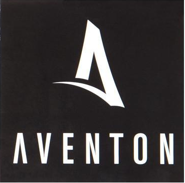

<!-- Barra navegacion-->
<nav class="navbar navbar-expand-lg navbar-light">
	<a class="navbar-brand" href="index.php"><!---->Aventón</a>
	<div class="collapse navbar-collapse" id="navbarNavAltMarkup">
		<div class="navbar-nav">
		</div>
	</div> 
	<button id="cerrar_sesion" type="button" class="btn btn-primary" onclick="location='logout.php'">
		Cerrar Sesión
	</button>
</nav>